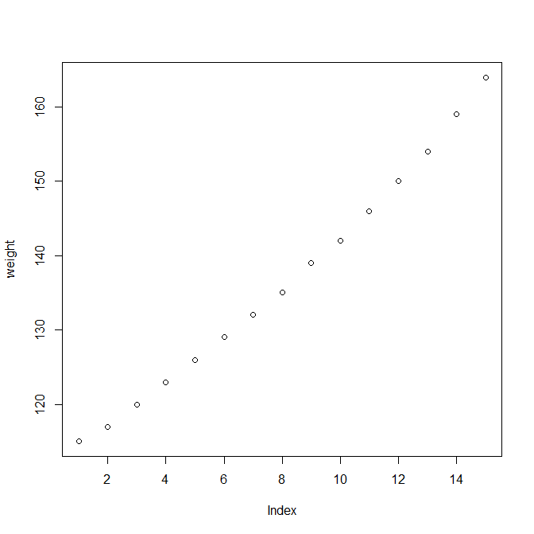
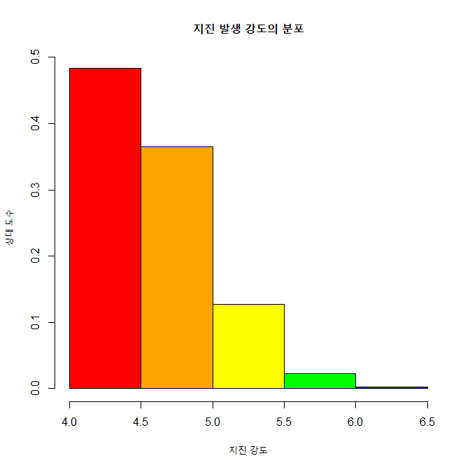
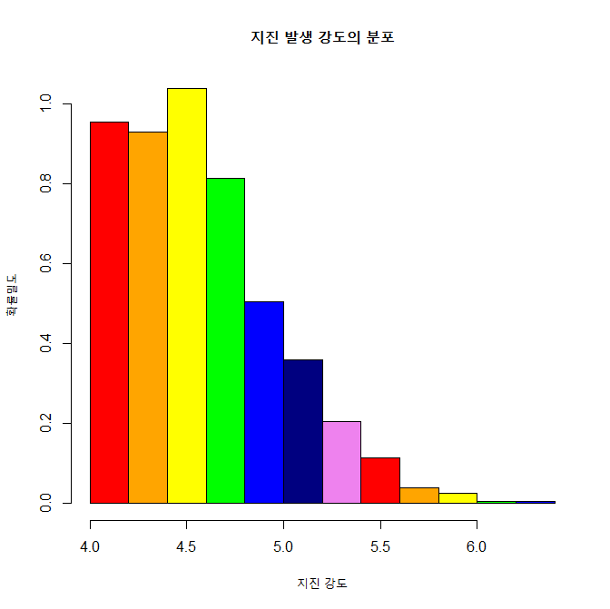
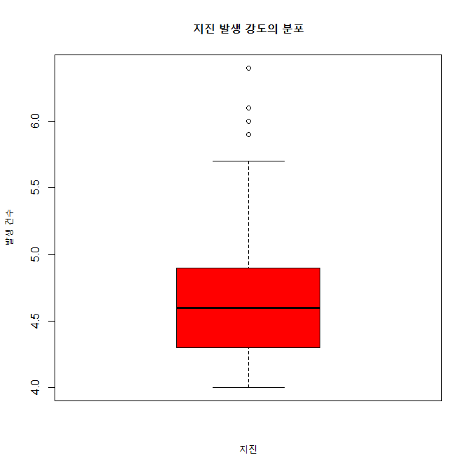
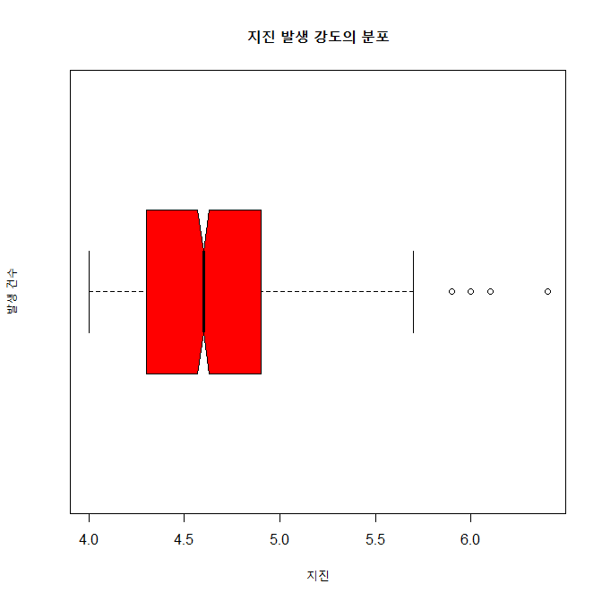

제5장 차트 프로그래밍
차트(Chart)는 1) 데이터의 분포를 파악하고, 2) 데이터 분석 결과를 효과적으로 전달하기 위해 유횽하게 사용된다.
제5장 차트 프로그래밍2. 파이차트2-1. 기본 파이차트 출력 : pie()2-2. 기준선 변경2-3. 색과 라벨 수정2-4. 3D 파이 차트 : pie3D()3. 바차트3-1. 기본 바 차트 출력 : barplot()3-2. 막대의 색 지정3-3. x, y축의 제목 달기3-4. y축의 상한치 조정3-5. 데이터 라벨 출력1) 바의 상단면 위에 라벨 출력 : text()2) 바의 상단면 하단에 라벨 출력3-6. 바 차트의 수평 회전(가로 막대)4. 스택형/그룹형 바 차트4-1. 스택형 바 차트(Stacked Bar Chart) 4-2. 그룹형 바 차트(Grouped Bar Chart)5. X-Y 플로팅5-1. 기본 x-y 플로팅5-2. 그래프 출력 모양 지정하기5-3. 그래프 선의 유형5-4. 플로팅 문자의 출력 6. 히스토그램6-1. 지진의 강도에 대한 히스토그램 : quakes 데이터 세트 이용 6-2. 계급 구간과 색 6-3. 확률밀도6-4. 상대도수 출력하기6-5. 계급의 수7. 박스 플롯7-1. 기본 박스 플롯7-2. 수평 박스 플롯7-3. V자형 박스 플롯
2. 파이차트
2-1. 기본 파이차트 출력 : pie()
x
# 데이터 입력x <- c(9, 15, 20, 6)label <- c("영업 1팀", "영업 2팀", "영업 3팀", "영업 4팀")# 파이차트 그리기pie(x, # 파이조각으로 표시될 데이터 : x (벡터) labels = label, # 파이의 조각에 부서명 표시 main = "부서별 영업 실적") # 차트의 전체 제목
2-2. 기준선 변경
init.angle=90으로 기준선 변경.
x
pie (x, init.angle = 90, # 12시에 기준선 설정 labels = label, main = "부서별 영업 실적")참고 : clockwise = TRUE => 시계방향으로 설정. (기본값 : 시계반대 방향)

2-3. 색과 라벨 수정
col =로 색 지정.paste()함수를 이용하여 문자열 조작
x
pct <- round(x/sum(x)*100)# label 조작. label <- paste(label, pct, sep=" : ") # "영업 1팀 : 18"label <- paste(label,"%",sep="") # "영업 1팀 : 18%""pie(x, labels=label, init.angle=90, col=rainbow(length(x)), # 무지개색, 색깔의 갯수: length(x) main="부서별 영업 실적")
2-4. 3D 파이 차트 : pie3D()
explode()로 조작 간의 간격 조정.labelcex =로 글자의 크기 조정
x
install.packages("plotrix")library(plotrix)pie3D(x, labels = label, explode = 0.1, # 파이 조작 간의 간격. 0이면 간격이 없음. labelcex = 0.8, # 라벨 글자 크기. (0.8배로 축소) main = "부서별 영업 실적")결과 :

3. 바차트
3-1. 기본 바 차트 출력 : barplot()
x
height <- c(9, 15, 20, 6)name <- c("영업 1팀", "영업 2팀", "영업 3팀", "영업 4팀")barplot(height, # 막대로 표시되는 데이터 : height (벡터) names.arg = name, # 막대 밑에 표시되는 이름 데이터 : name (벡터) main = "부서별 영업 실적") # 바차트의 제목 
3-2. 막대의 색 지정
col = 인수로 색 지정
x
barplot(height, names.arg = name, main = "부서별 영업 실적", col = rainbow(length(height))) # height 벡터의 요소 갯수의 무지개색
3-3. x, y축의 제목 달기
xlab =" " 과 ylab =" "이용하여, x축의 제목과 y축의 제목 지정
x
barplot(height, names.arg = name, main = "부서별 영업 실적", col = rainbow(length(height)), xlab = "부서", # x축의 제목 ylab = "영업 실적(억 원)") # y축의 제목
3-4. y축의 상한치 조정
ylim = c(min, max)로 y축의 하한치와 상한치 조정
x
barplot(height, names.arg = name, main = "부서별 영업 실적", col = rainbow(length(height)), xlab = "부서", ylab = "영업 실적(억 원)", ylim = c(0,25)) # y축의 표시값을 0 ~ 25표 지정
3-5. 데이터 라벨 출력
1) 바의 상단면 위에 라벨 출력 : text()
x
bp <- barplot(height, # 바차트를 그리고 그 결과를 변수 bp에 저장 names.arg = name, main = "부서별 영업 실적", col = rainbow(length(height)), xlab = "부서", ylab = "영업 실적(억 원)", ylim = c(0,25))bp # bp는 리스트 변수임.heighttext(x = bp, # 바에 라벨 출력, x값은 bp y = height, # y 값은 바차트의 x값인 height labels = round(height,0), # 바에 표시할 값 height, round(height, 0) : 소수점이하 반올림 pos = 3) # 바에 라벨이 표시되는 위치 : 1, 2, 3, 4 => 3은 바의 위에...
2) 바의 상단면 하단에 라벨 출력
x
bp <- barplot(height, names.arg=name, main="부서별 영업 실적", col=rainbow(length(height)), xlab="부서", ylab="영업 실적(억 원)", ylim=c(0,25))text(x=bp, y=height, labels=round(height,0), pos=1) # 1은 바의 밑에 표시
3-6. 바 차트의 수평 회전(가로 막대)
horiz = TRUE로 바 차트의 방향을 수평을 바꿈.
x
barplot(height, names.arg=name, main="부서별 영업 실적", col=rainbow(length(height)), xlab="영업 실적(억 원)", ylab="부서", horiz=TRUE, ### width=50)
4. 스택형/그룹형 바 차트
beside = TRUE로 바차트를 그룹형으로 바꿀 수 있음.- 기본값은
beside=FALSE(스택형)
4-1. 스택형 바 차트(Stacked Bar Chart)
x
height1 <- c(4, 18, 5, 8)height2 <- c(9, 15, 20, 6)height <- rbind(height1, height2)height name <- c("영업 1팀", "영업 2팀", "영업 3팀", "영업 4팀")legend_lbl <- c("2014년", "2015년")barplot(height, main="부서별 영업 실적", names.arg=name, xlab="부서", ylab="영업 실적(억 원)", col=c("darkblue","red"), legend.text=legend_lbl, # 차트에 범례 표시 ylim=c(0, 35))
4-2. 그룹형 바 차트(Grouped Bar Chart)
x
barplot(height, main="부서별 영업 실적", names.arg=name, xlab="부서", ylab="영업 실적(억 원)", col=c("darkblue","red"), legend.text=legend_lbl, ylim=c(0, 30), beside=TRUE, # 그룹형 바차트로 변경함 args.legend=list(x='top')) # 범례의 위치 지정
5. X-Y 플로팅
5-1. 기본 x-y 플로팅
변수가 한 개인 경우, x축은 그 변수의 색인번호가 출력되고, y축에 그 값이 표시됨.
x
women # data setstr(women)weight <- women$weight plot(weight) # weight 출력
변수가 2개인 경우, x-축, y축 출력됨.
x
height <- women$heightplot(height, weight, # x축에 height, y 축에 weight xlab="키", ylab="몸무게")
5-2. 그래프 출력 모양 지정하기
type =에 따를 출력 모향 지정. 교재 p. 135 참고
x
plot(height, weight, xlab="키", ylab="몸무게", type="b") # p. 135 참고 (점과 선)
5-3. 그래프 선의 유형
type = "l"로 지정하면 그래프가 선의 모양이 됨
이 때
lty =: 1~6 으로 선의 유형 지정lwd =: 1의 값이 기본 값. 2로 지정하면 2배 굵게 표시됨
x
plot(height, weight, xlab="키", ylab="몸무게", type="l", # 선 그리기 lty=1, # 실선 lwd=1) # 기본 값
5-4. 플로팅 문자의 출력
pch =에 의해 플로팅 문자 지정. 교재 137, 참고
x
plot(height, weight, # x축에 height, y 축에 weight xlab="키", ylab="몸무게", pch=23, # 다이아몬드 모양 col="blue", bg="yellow", cex=1.5) # 다이아몬드 크기. 1.5배
6. 히스토그램
- 바차트 : x 축이 범주형 변수
- 히스토그램 : x 축이 연속형 변수
6-1. 지진의 강도에 대한 히스토그램 : quakes 데이터 세트 이용
x
head(quakes)str(quakes)mag <- quakes$mag # mag : 지진의 강도, 연속형 변수maghp <- hist(mag, main="지진 발생 강도의 분포", xlab="지진 강도", ylab="발생 건수")hp
x
#====== hist() -> barplot()으로 전환해서 라벨달기head(quakes)mag <- quakes$maghp <- hist(mag, main="지진 발생 강도의 분포", xlab="지진 강도", ylab="발생 건수")(height <- hp$counts)(name=as.character(hp$mids))bp <- barplot(height, names.arg=name, col=rainbow(length(height)), xlab="지진강도", ylab="발생빈도", ylim=c(0,250))
x
text(x=bp, y=height, labels=round(height,0), pos=3)#======= 라벨달기 끝
6-2. 계급 구간과 색
col =: 계급의 색 지정breaks =: 계급의 구간 지정
x
colors <- c("red", "orange", "yellow", "green", "blue", "navy", "violet")hp <- hist(mag, main="지진 발생 강도의 분포", xlab="지진 강도", ylab="발생 건수", col=colors, # 막대의 색깔 지정, colors 변수 breaks=seq(4, 6.5, by=0.5)) # 계급의 구간 지정, 4 ~ 6.5를 0.5 간격으로hp
x
#====== hist() -> barplot()으로 전환해서 라벨달기head(quakes)mag <- quakes$magcolors <- c("red", "orange", "yellow", "green", "blue", "navy", "violet")hp <- hist(mag, main="지진 발생 강도의 분포", xlab="지진 강도", ylab="발생 건수", col=colors, breaks=seq(4, 6.5, by=0.5))(height <- hp$counts)(name=as.character(hp$mids))bp <- barplot(height, names.arg=name, col=rainbow(length(height)), xlab="지진강도", ylab="발생빈도", ylim=c(0,500))bp
x
text(x=bp, y=height, labels=round(height,0), pos=3)#======= 라벨달기 끝
주의 : 이 그림의 경우 y축의 최대값이 500으로 되어 있어서 지진강도 4.25에 대한 라벨이 잘 안 보인다.
ylim = c(0, 600) 을 추가하면 잘 보임.
x
bp <- barplot(height, names.arg = name, col=rainbow(length(height)), xlab="지진강도", ylab="발생빈도", ylim=c(0,600)) # ylim = c(0, 600) 으로 수정bptext(x=bp, y=height, labels=round(height,0), pos=3)
6-3. 확률밀도
연속 변수의 빈도수를 히스트로그램으로 그린 것이 확률밀도그림이다.
x
mag <- quakes$maghist(mag, main="지진 발생 강도의 분포", xlab="지진 강도", ylab="확률밀도", col=colors, breaks=seq(4, 6.5, by=0.5), freq=FALSE) x
lines(density(mag)) 
6-4. 상대도수 출력하기
빈도수를 전체 관측수로 나누면 이것이 상대도수가 된다.
x
colors <- c("red", "orange", "yellow", "green", "blue", "navy", "violet")mag <- quakes$magh <- hist(mag, breaks=seq(4, 6.5, by=0.5), freq=FALSE) h
x
h$density <- h$counts/sum(h$counts) # 상대도수 구하기.plot(h, # 상대도수 그림 그리기 freq=FALSE, main="지진 발생 강도의 분포", xlab="지진 강도", ylab="상대 도수", col=colors)
6-5. 계급의 수
breaks = "Sturges"가 기본값임.
x
hist(mag, main="지진 발생 강도의 분포", xlab="지진 강도", ylab="확률밀도", col=colors, breaks="Sturges", freq=FALSE)
7. 박스 플롯
summary( )를 그림으로 나타내는 것이 boxplot()이다.
7-1. 기본 박스 플롯
x
mag ＜- quakes$magmin(mag)max(mag)median(mag)quantile(mag, c(0.25, 0.5, 0.75))summary(mag) # 앞의 min, max, median, quantile 과 비교바람.boxplot(mag, # summary(mag)를 그림으로 표시함. main="지진 발생 강도의 분포", xlab="지진", ylab="발생 건수", col="red")
7-2. 수평 박스 플롯
horizontal = TRUE로 박스 플롯의 방향을 수평으로 바꾼다.
x
boxplot(mag, # summary(mag)를 그림으로 표시함. main="지진 발생 강도의 분포", xlab="지진", ylab="발생 건수", horizontal=TRUE, col="red")
7-3. V자형 박스 플롯
notch = TRUE를 이용하여 V자형 박스 플롯을 그린다.
x
boxplot(mag, # summary(mag)를 그림으로 표시함. main="지진 발생 강도의 분포", xlab="지진", ylab="발생 건수", horizontal=TRUE, notch=TRUE, col="red")
[ R Source ]